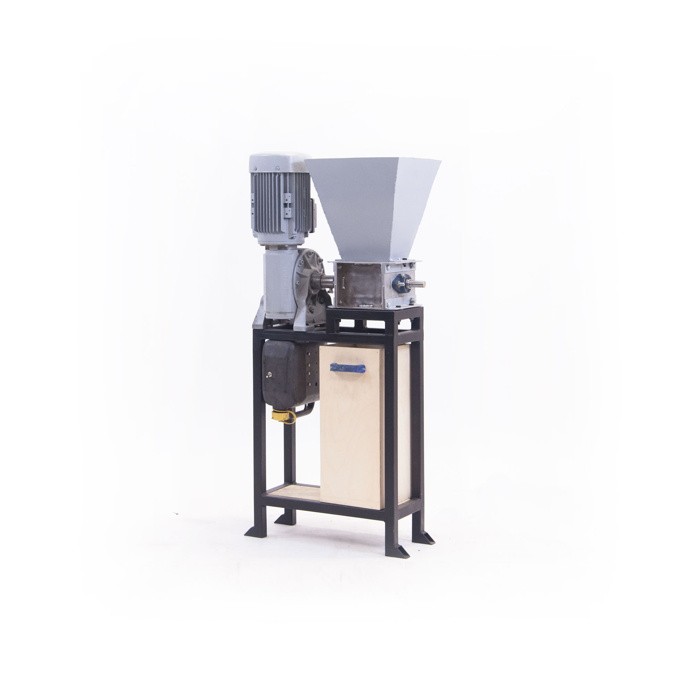
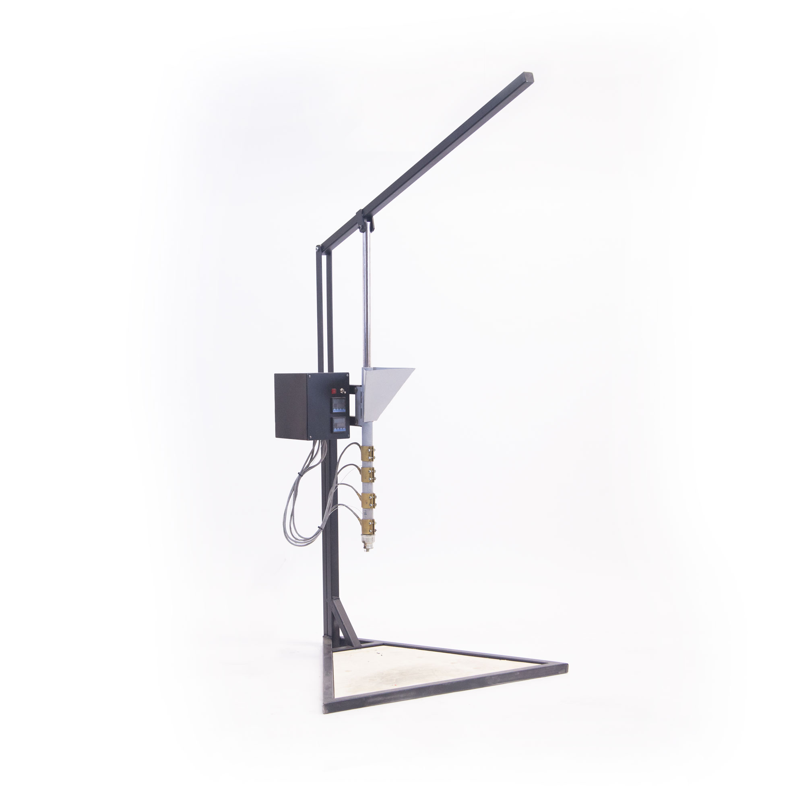

Brad Voracek
BA · Computer Science · UC Berkeley
MS · Economics · Levy Institute
What is Precious Plastic?
Why should we make these machines?
Manufacturing
Give us experience building stuff
Chairmans
Improve our submission by bettering our community
The Machines
Open Hardware
You can download how to make them online
Relatively Cheap
We can make them with salvaged materials
The Shredder

The Injector

Improving Our Community
Increase Plastic Recycling
Create LEGOs to give away to disadvantaged youth
The Chairman's Award
The most prestigious award at FIRST, it honors the team that best represents a model for other teams to emulate and best embodies the purpose and goals of FIRST
"To transform our culture by creating a world where science and technology are celebrated and where young people dream of becoming science and technology leaders."
Dreams Start Young
Lancaster's unemployment rate is 10.9% versus 6.3% nationwide
16.65% of households in Lancaster make less than $15k/yr
It's hard to buy LEGO's for your children to play with if you're struggling to put food on the table
Childhood development literature suggests strong links between pre-k play and success later in life